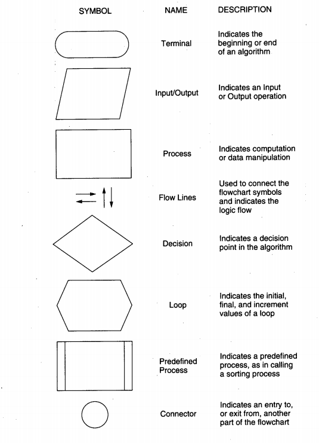

課程簡介 <<
Previous Next >> github 帳號
亂數分組
流程圖符號

上課第一週即進行學員亂數分組, 計算機程式的實際應用與程式對應語法的介紹, 將從此一程式的開發啟動
基本流程:
取得各班修課程成員的學號資料
決定每組幾人
將學員學號資料的次序弄亂
依據每組幾人, 從頭開始分組, 以確定各組成員
若最後一組人數過少, 將分別依序捕到前述已經分組的組別中
在課程加退選階段結束後, 各組再清算所餘人數是否得當, 不排除重新分組
各班檢討是否整個學期只分組一次, 或分組兩次, 或更多次的優缺點, 依據討論結果進行後續課程任務分組
為何使用 Python?
If you do much work on computers, eventually you find that there’s some task you’d like to automate. For example, you may wish to perform a search-and-replace over a large number of text files, or rename and rearrange a bunch of photo files in a complicated way. Perhaps you’d like to write a small custom database, or a specialized GUI application, or a simple game.
If you’re a professional software developer, you may have to work with several C/C++/Java libraries but find the usual write/compile/test/re-compile cycle is too slow.
Perhaps you’re writing a test suite for such a library and find writing the testing code a tedious task. Or maybe you’ve written a program that could use an extension language, and you don’t want to design and implement a whole new language for your application.
Python is just the language for you.
首先我們將採用 Python 進行亂數分組, 各分組也可以研究看看, 假如採用 C, C++, Java, Javascript, Lua 或 Dart 進行類似的工作, 該如何進行?
是直接在命令列中執行, 寫一個配合的 GUI, 在網頁介面中執行, 或者在手機或平板上執行? 各有何種應用情境?
近端資料讀取亂數分組程式
import random
filename = 'cdaw1_student_list.txt'
# 每組人數
num_in_one_group = 8
# 組序由 1 開始
group = 1
# 各班分組後所得數列
c2019 = []
with open(filename) as f:
# 讀進全部檔案, 轉進數列, 並同時將各行的 \n 去除
read_data = f.read().splitlines()
print("共有 " + str(len(read_data)) + " 位學員")
# 利用 shuffle 將數列隨機弄亂
random.shuffle(read_data)
for i in range(len(read_data)):
# 利用整數相除的餘數進行分組
if i%num_in_one_group == 0:
# 列出分隔符號
print("-"*20)
print("group " + str(group) +":")
# 在分組區隔時重置各組學員數列
group_list = []
print()
# 同時列出與分隔標註對應 i 的數列內容
print(read_data[i])
group_list.append(read_data[i])
group = group + 1
else:
# 逐一列出同組的其他學員
print(read_data[i])
group_list.append(read_data[i])
if i%num_in_one_group == 0:
c2019.append(group_list)
# c2019 為該班分組後所得分組數列
print(c2019)
從網站讀取資料亂數分組程式
import random
import urllib3
target_url = "https://raw.githubusercontent.com/mdecourse/cd2019/gh-pages/data/cda/cdaw1_student_list.txt"
# 從 url 讀取資料, 之後利用 splitlines() 存入學員學號字串數列中
http = urllib3.PoolManager()
response = http.request('GET', target_url)
data = response.data.decode('utf-8')
read_data = data.splitlines()
#print(read_data)
# 每組人數
num_in_one_group = 10
# 組序由 1 開始
group = 1
# 各班分組後所得數列
c2019 = []
print("共有 " + str(len(read_data)) + " 位學員")
# 利用 shuffle 將數列隨機弄亂
random.shuffle(read_data)
for i in range(len(read_data)):
# 利用整數相除的餘數進行分組
if i%num_in_one_group == 0:
# 列出分隔符號
print("-"*20)
print("group " + str(group) +":")
# 在分組區隔時重置各組學員數列
group_list = []
print()
# 同時列出與分隔標註對應 i 的數列內容
print(read_data[i])
group_list.append(read_data[i])
group = group + 1
else:
# 逐一列出同組的其他學員
print(read_data[i])
group_list.append(read_data[i])
if i%num_in_one_group == 0:
c2019.append(group_list)
# c2019 為該班分組後所得分組數列
print(c2019)
為何使用 Dart?
因為 Dart 是具有潛力, 而且能夠適應未來可攜裝置與 IOTs 整合環境變化應用的程式語言.
使用 Dart 執行亂數分組:
https://dartpad.dev/embed-dart.html?id=9f69e77cb456b97cccc8eb5a9dbd991c
結合 gist 與 dartpad.dev, 也可以從 https://mde.tw/dartpad/ 右上方 Samples 選擇亂數分組程式執行.
課程簡介 <<
Previous Next >> github 帳號